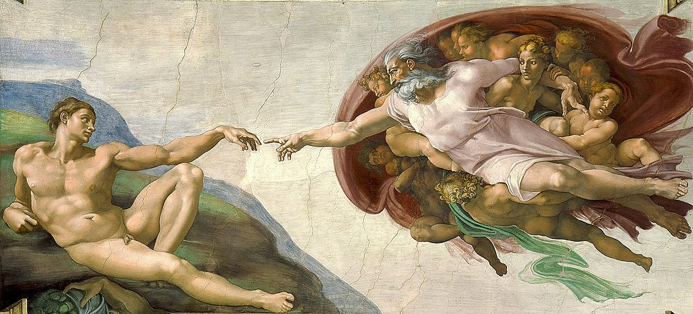

Literature
Ron English, Death and the Eternal Forever (London: Korero Press, 2014), p. 156. ISBN 978-0957664920.
Ron English, Status Factory: The Art of Ron English (San Francisco: Last Gasp of San Francisco, 2014), p. 132. ISBN 978-0867197891.
Ron English, Fauxlosophy: The Art of Ron English (San Francisco: Last Gasp, 2016), p. 160. ISBN 978-0867196566.
Ron English, Original Grin: The Art of Ron English (Paris: Cernunnos, 2019), p. 223. ISBN 978-2374950938.
Notes
This work references Pablo Picasso’s Guernica (1937).
This work also references Michelangelo’s The Creation of Adam.
This image appears on Vasyl Voziyan’s SoundCloud page.
A print of this composition appears on Artwork Archive as “Adam and Eve in the Garden of Guernica” #1, where it is listed as a 2008 giclée print on canvas measuring 60 × 24 inches, with framed dimensions of 62 × 26 × 1.5 inches, from the collection of Gino Joukar.
Ancillary Documentation

